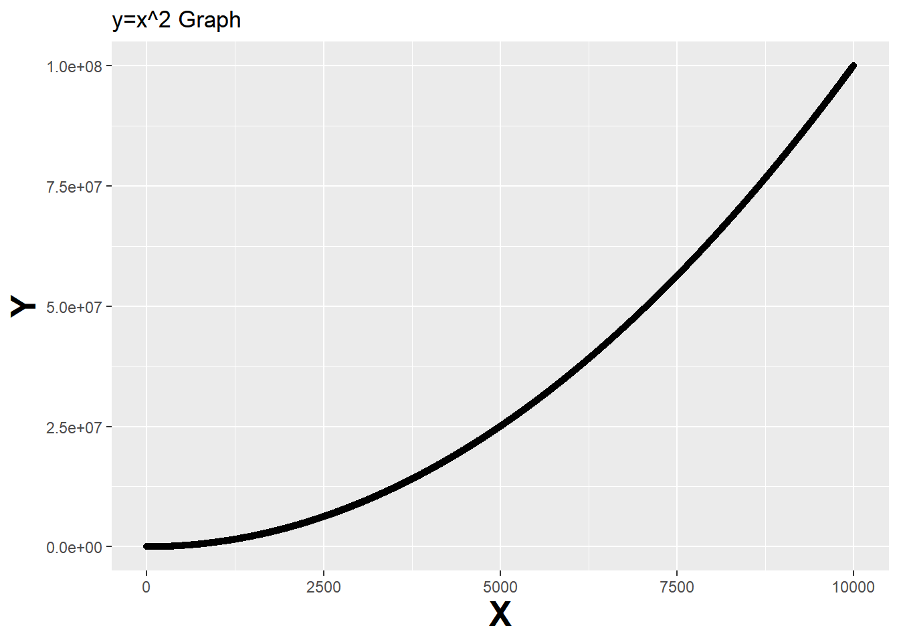
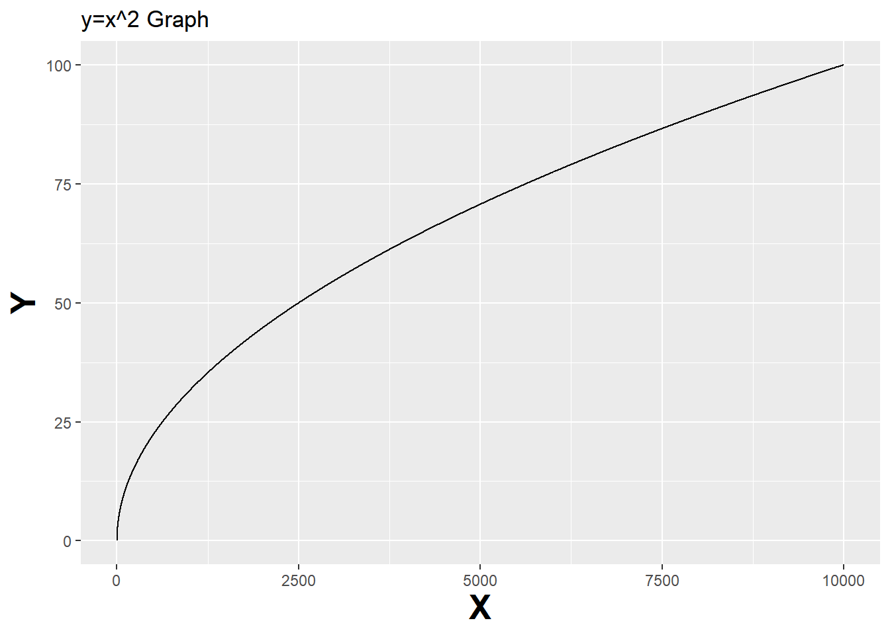

Exploratory Data Analysis (2021 Spring) [in Korean]
Author
Sangwon Ju, Yonsei Public Administration
Published
April 7, 2021
5장. 자료의 재표현
1번
적당한 범위에서 x의 1/2승, 1/3승, 1/4승, log 함수 그래프를 그려 함수의 기울어진 형태가 log 함수 쪽으로 변하는 것을 보여라. 반대로 x의 -1/2, -1/3, -1/4, log 함수 그래프를 그려 함수의 기울어진 정도가 log 함수로 수렴하는 것을 보여라.
library(ggplot2)library(reshape)#적당한 범위에서 x의 1/2승, 1/3승, 1/4승, log 함수 그래프를 그려 함수의 기울어진 형태가 log 함수 쪽으로 변하는 것을 보여라.x=seq(0,10000,1)y=seq(0,10000,1)ggplot()+geom_point(aes(x,y))+labs(title ="y=x Graph", x ="X", y ="Y",fill="count") +theme(axis.title.x =element_text(face="bold", size=19, colour="black")) +theme(axis.title.y =element_text(face="bold", size=19, colour="black"))
ggplot()+geom_point(aes(x,y^2))+labs(title ="y=x^2 Graph", x ="X", y ="Y",fill="count") +theme(axis.title.x =element_text(face="bold", size=19, colour="black")) +theme(axis.title.y =element_text(face="bold", size=19, colour="black"))

comparison=data.frame(x,y^(1/2),y^(1/3),y^(1/4),log(y+1e-05))names(comparison)=c("x","y의 1/2승","y의 1/3승","y의 1/4승","logarithm")compare2=melt(comparison,id="x")# 기본ggplot()+geom_line(aes(x,y))+labs(title ="y=x", x ="X", y ="Y",fill="count") +theme(axis.title.x =element_text(face="bold", size=19, colour="black")) +theme(axis.title.y =element_text(face="bold", size=19, colour="black"))
# 1/2 승ggplot()+geom_line(aes(x,y^(1/2)))+labs(title ="y=x^2 Graph", x ="X", y ="Y",fill="count") +theme(axis.title.x =element_text(face="bold", size=19, colour="black")) +theme(axis.title.y =element_text(face="bold", size=19, colour="black"))

# 1/3 승ggplot()+geom_line(aes(x,y^(1/3)))+labs(title ="y=x^3 Graph", x ="X", y ="Y",fill="count") +theme(axis.title.x =element_text(face="bold", size=19, colour="black")) +theme(axis.title.y =element_text(face="bold", size=19, colour="black"))
# 1/4 승ggplot()+geom_line(aes(x,y^(1/4)))+labs(title ="y=x^4 Graph", x ="X", y ="Y",fill="count") +theme(axis.title.x =element_text(face="bold", size=19, colour="black")) +theme(axis.title.y =element_text(face="bold", size=19, colour="black"))
# 로그함수일때ggplot()+geom_line(aes(x,log(y+1e-03)))+labs(title ="y=x^2 Graph", x ="X", y ="Y",fill="count") +theme(axis.title.x =element_text(face="bold", size=19, colour="black")) +theme(axis.title.y =element_text(face="bold", size=19, colour="black"))
Power의 값이 x의 1/2승, 1/3승, 1/4승으로 작아질 수록 log함수로 수렴하고 있음을 확인할 수 있다.
# 반대로 x의 -1/2, -1/3, -1/4, log 함수 그래프를 그려 함수의 기울어진 정도가 log 함수로 수렴하는 것을 보여라.x1=seq(1,100,1)y1=seq(1,100,1)comparison3=data.frame(x1,y1^(-1/4),y1^(-1/3),y1^(-1/2),log(y1+1e-05))names(comparison3)=c("x","y의 -1/4승","y의 -1/3승","y의 -1/2승","logarithm")compare3=melt(comparison3,id="x")# 함수 여러개 비교ggplot(compare3,aes(x=x,y=value))+theme_bw()+geom_line(aes(y=value,color=variable),size=2)+theme(axis.title.x =element_text(face="bold", size=19, colour="black")) +theme(axis.title.y =element_text(face="bold", size=19, colour="black"))
Power의 값이 x의 -1/2승, -1/3승, -1/4승으로 증가할수록 log함수로 수렴하고 있음을 확인할 수 있다.
2번
2020년 1월 1일부터 2021년 4월 6일까지의 삼성전자 주식 가격을 인터넷에서 찾아 줄기잎 전시와 상자그림을 그려 대칭성을 점검하고 필요하다면 대칭화하는 변환을 시행착오 방법으로 찾아라. 어떤 시행착오로 찾아갔는지 중간 과정을 전부 보여라. 변환 후의 줄기잎 전시와 상자그림을 그려 전, 후를 비교하여라. 변환 전, 후의 skewness 값을 비교하여라.
url="https://fchart.stock.naver.com/sise.nhn?timeframe=day&count=6000&requestType=0&symbol="samsung_data=read_xml(glue::glue({url},samsung$code))splitting=function(a){ result=str_split(a,pattern="\\|",simplify=T) result=data.frame(result)names(result)=c('date','시가','고가','저가','종가',"거래량")return(result)}samsung <- samsung_data %>%xmlParse(useInternalNodes =TRUE) %>%xmlToList() %>% plyr::ldply(tibble) %>%select(data1="<named list>") %>%unlist() %>%tibble(data1=as.character(.)) %>%select(data1) %>%do(head(., nrow(.)-6)) %>%transmute(data2=map(data1,splitting)) %>%unnest(data2) %>%mutate_all(.funs=as.numeric) %>%mutate(date=ymd(date)) %>%filter(date>=ymd(20200101) & date<=ymd(20210406))library(ggplot2)ggplot(samsung, aes(x = date, y = 시가)) +theme_bw()+geom_line(size=1, color ="blue") +ggtitle("삼성전자 시가 변화 추이") + ggeasy::easy_center_title()
# install.packages("reshape")library(reshape)samsung1=samsung %>%select(-거래량) %>%pivot_longer(!date,names_to="variable",values_to="value")# 주가 추이 시각화ggplot(samsung1, aes(x = date, y = value)) +theme_minimal()+geom_line(size=1, aes(colour=variable)) +ggtitle("삼성전자 주가 변화 추이")+scale_color_discrete(name="주가 유형")+labs(y="주가",x="거래일")+scale_x_date(date_breaks ="months" , date_labels ="%b/%y")+scale_y_continuous(limits =c(40000,96000), breaks=seq(40000,96000,5000))+ ggeasy::easy_center_title()+ ggeasy::easy_rotate_x_labels()
max(samsung$고가)-min(samsung$저가)
[1] 54500
fivenum(samsung$시가)[4]-fivenum(samsung$시가)[2]
[1] 18450
18450/1.35
[1] 13666.67
고점과 저점 비교시 54500 정도의 변동성 존재
hspread: 18450정도이고 pseudo-sigma 13666.67 정도. 한국 코스피 변동성을 계산하여 표준편차를 확인하고 이를 계산된 변동성과 비교한다면 삼성전자 주식의 안정성에 대해서 예측해볼 수 있다. (단순히 상승했다, 상승하지 않았다 정도의 지식에 더해 주식의 변동성을 이해한다면 안정적인 주식인지 안정적이지 않은 주식인지 확인할 수 있다.)
이후 시계열 분석을 활용해 추가적인 분석이 요구됨
주식 가격을 인터넷에서 찾아 줄기잎 전시와 상자그림을 그려 대칭성을 점검 - 주식 가격은 시가를 기준으로 파악한다.
#Boxplotggplot(samsung1, aes(x = variable, y = value))+ggtitle("삼성전자 주가 변화 추이")+geom_boxplot(aes(fill=variable))+labs(y="주가",x='주가 유형')+theme_minimal()+ ggeasy::easy_center_title()
박스플롯 상으로는 자료들의 대칭성을 어느정도 확인할 수 있다. 특이값이 없는 대신 큰쪽의 Whisker의 길이가 작은쪽의 Whisker의 길이에 비해서 긴 것으로 확인된다. 또한 Median의 값이 Lower-hinge 쪽에 더 가까운 것 이 확인되기 때문에 Skewed to the right에 해당하는 분포로 보인다. Stem-leaf Display에서는 두개의 cluster를 확인할 수 있는데, stem 58을 기준으로한 하나의 cluster와 stem 82를 기준으로 한 또 하나의 cluster가 있다. 작은 쪽의 cluster가 더 큰쪽의 cluster에 비해서 더 많은 숫자들을 가지고 있는 것을 확인할 수 있다.
A measure of symmetry로 skewness 값을 계산할 경우 0.46정도로 skewed to the right 되어 있음을 확인할 수 있다.
Skewness를 조절하기 위해서 수업시간에 제시한 4가지 방법들을 적용해보고자 한다.
# Logstem(log(samsung$시가))
The decimal point is 1 digit(s) to the left of the |
106 | 69
107 | 04
107 | 566677777788999999
108 | 000000000011111111122222223444444
108 | 55666666667777888899999
109 | 000000000111111112222222333333333334444444444
109 | 555556666666666677777777778888888899999999999999
110 | 000000000001111111111111111112222222222233333
110 | 77789
111 | 01133333
111 | 66999999
112 | 00011111
112 | 678
113 | 000000111111112222222222222233333333344444444444
113 | 5566777899
114 | 001111
boxplot(log(samsung$시가))
# sqrtstem(sqrt(samsung$시가))
The decimal point is 1 digit(s) to the right of the |
20 | 69
21 | 0
21 | 5577788889999
22 | 001111111111112222233333333444444
22 | 5566667788888888999
23 | 000111222222333333334444444
23 | 5555566666666777777777777778899999
24 | 000000000011111111112222223333333334444444444
24 | 555555555666666666666666667777777777889999
25 | 333
25 | 56799
26 | 11122
26 | 5599999
27 | 001111222
27 | 8
28 | 11
28 | 5555555566666677777777788888888889999999
29 | 00000111123444
29 | 568888
30 | 0000
boxplot(sqrt(samsung$시가))
# minus inversestem(-1/(samsung$시가))
The decimal point is 6 digit(s) to the left of the |
-23 | 5
-22 | 87
-21 | 663321111
-20 | 99987765555444444443332222111100000
-19 | 997766655533222222000
-18 | 998887766655554444433332222211110000
-17 | 99999998888888777776555554444443333332222222211000000
-16 | 99999999888888888777777766666666665555555554444444433322211
-15 | 666421
-14 | 997776632
-13 | 99888876666655
-12 | 9773333333333222222211111111111100000000
-11 | 999999998888876555433221111
boxplot(-1/(samsung$시가))
# minus inverse of sqrtstem(-1/sqrt((samsung$시가)))
The decimal point is 4 digit(s) to the left of the |
-48 | 5
-47 | 86
-46 | 54210
-45 | 999988765533333222222211000
-44 | 9999988877776644332211
-43 | 9998888866654443322110000
-42 | 999998888777766665444433333332222211111110
-41 | 9888877777766666655555544443222222211111100000000
-40 | 9999988888777777777776666666555555544432222
-39 | 65530
-38 | 96644322
-37 | 872222110
-36 | 9999877
-35 | 9661111110000000
-34 | 99998888888888877777666655555555444331100
-33 | 9866554433
boxplot(-1/sqrt((samsung$시가)))
Skewness 값을 변환전후로 비교
skewness(samsung$시가)
[1] 0.4634146
skewness(log(samsung$시가))
[1] 0.4031337
skewness(sqrt(samsung$시가))
[1] 0.433612
skewness(-1/(samsung$시가)) # 가장 낮은 수준의 Skewness를 보여줌
[1] 0.3404237
skewness(-1/sqrt(samsung$시가))
[1] 0.372047
일반적으로 사용하는 변환으로는 만족스러운 수준으로 skewness 값이 감소되었는지 알수가 없었다. 따라서 skewness 값을 감소시키기 위해 함수를 활용하여 가능한 여러 경우의 값들을 비교해보고자 한다. (skewness값은 0일때 최소가 되고, 이때 자료가 대칭적이 되었다고 가정할 수 있다.)
s=c()start=samsung$시가for (i inseq(-10,10,0.1)) {if(i>0){ s =c(s,skewness(start^i)) }elseif(i==0){ s =c(s,skewness(log(start))) }else{ s =c(s,skewness(-(start^i))) }}y=cbind(seq(-10,10,0.1),s)plot(y,xlab="Power Value",ylab="Skewness")abline(h=0)
# -6정도일때 Skewness 자체는 최소가 된다. boxplot(-(start^-6))
skewness공식은 ((Hu-M)-(M-Hl))/((Hu-M)+(M-Hl))이다.
skewness의 공식이 H-Spread 범위의 Lower Hinge Upper Hinge 등에 의해서 만들어지기 때문에 i=-6을 활용할 경우 Spread 내부의 Symmery는 보정이 되었지만 Whisker의 길이가 오히려 길어졌다는 점에서 처음에 사용하였던 기존의 변환을 활용해보고자 한다.
다시한번 확인해보면, H-spread 내의 대칭성 정도 및 Whisker의 길이 까지 고려하여 가장 적절한 변환을 선택한다면 minus inverse 변환이나 minus sqrt inverse 변환 둘중에서 선택하면 된다고 본다. skewness가 더 0에 가까운 minus inverse 변환을 활용해서 데이터를 변환한다면 H-spread내 Hinge와 Median의 대칭성 그리고 whisker들의 대칭성 모두 다 확보할수 있다고 생각한다.
decided=-1/(samsung$시가)hist(decided,breaks=20) # 그럼에도 불구하고 stem and leaf display에서 확인하였던 오른쪽의 두번째 Cluster의 흔적은 사라지지 않고 남아 있다.abline(v=median(decided),col="red")
3번
airquality 자료에서 Ozone 자료를 대칭화하기 위한 변환공식을 이용하여 변환 전과 변화 후를 비교하여라. 변환 후의 줄기잎 전시와 상자그림을 그려 전, 후를 비교하여라. 변환 전, 후의 skewness 값을 비교하여라.
data(airquality)attach(airquality)str(Ozone)
int [1:153] 41 36 12 18 NA 28 23 19 8 NA ...
summary(Ozone)
Min. 1st Qu. Median Mean 3rd Qu. Max. NA's
1.00 18.00 31.50 42.13 63.25 168.00 37
변환 이전에는 stem and leaf display를 활용해서 그래프를 확인할 경우 Skewed to the right되어있는 것을 어느정도 확인할 수 있다. 중간에 blank가 있는 것으로 보아 outlier의 존재 가능성이 존재한다. 또한 stem 1과 2를 기준으로 Cluster가 이루어져 있는데, 높은 수준의 Ozone보다는 낮은 수준의 Ozone양이 많음을 확인할 수 있다. 실제로 Boxplot을 가지고 확인할 경우 결측치가 두개 존재하며, median은 Lower Hinge에 가깝게 설정되어 있다. Skewness는 0.4065394로 계산되어지므로 다시한번 Skewed to the right임을 확인할 수 있다.
변환 이후에 stem and leaf display를 확인할 경우 cluster가 2개에서 stem 3을 중심으로 하는 하나의 cluster로 줄어들었으며, skewed된 정도도 상당히 완화된 것이 확인된다. Boxplot을 통해서 확인할 경우 Outlier가 두개에서 한개로 감소하였으며, whisker의 길이도 위아래 어느정도 비슷해 진 것으로 보인다. skewness 또한 0.1123698로 0.4065394에서 줄어들었으므로 확실히 skewed to the right 되어 있는 성향이 완화된 것으로 보인다. (다만, Ourlier의 발생은 Ozone의 값이 1이라 로그의 성질에 의해서 0으로 계산되어 그러한 것으로 보인다.)
4번
지난번 숙제의 도시별 구의 인구 자료를 도시별 퍼짐이 비슷하여지도록 하는 변환을 찾아 전과 후를 비교하여라. (무턱대고 lm 함수를 쓰면 낭패를 볼 수 있으니 조심하여야 한다. ’눈대중’이 좋을 때도 많음.)
skewness_per_city
서울 -0.126167466
부산 -0.308713929
대구 -0.264876458
인천 -0.620004590
광주 -0.005903398
대전 0.794106977
울산 0.208750686
세종 NaN
mean(log$skewness_per_city,na.rm=T)
[1] -0.04611545
#sqrt# 가장 대칭성 문제를 잘 해결 한 것으로 보임 (결측치도 적은편)ggplot(data=pop2021,aes(x=시,y=sqrt(인구),fill=시))+theme_bw()+geom_boxplot(varwidth=T)+scale_y_continuous(labels = scales::comma)+scale_fill_brewer(palette="Pastel1")+scale_x_discrete(labels=my_xlab)
skewness_per_city
서울 -0.07141391
부산 -0.06805030
대구 -0.16831292
인천 -0.03676154
광주 -0.30186291
대전 -0.86654647
울산 -0.22122872
세종 NaN
mean(lm2$skewness_per_city,na.rm=T)
[1] -0.2477395
combined_skewness=cbind(log,sqrt,inverse,sqrtinverse,lm,lm2)# Spread-versus-level Plot에 선형회귀분석을 사용하여 얻어진 값을 가지고 Transformation을 진행해 보았으나, 만족할 만한 변환이 이루어지지는 않았다.# 그 이유로는 데이터의 갯수가 많지 않은 점도 있고, 회귀식 자체가 reliable하지 않은 부분도 있는 것으로 보인다.library(data.table)
Attaching package: 'data.table'
The following objects are masked from 'package:dplyr':
between, first, last
The following object is masked from 'package:purrr':
transpose
The following objects are masked from 'package:lubridate':
hour, isoweek, mday, minute, month, quarter, second, wday, week,
yday, year
The following object is masked from 'package:reshape':
melt
서울 부산 대구 인천 광주
log -0.12616747 -0.3087139 -0.2648765 -0.62000459 -0.005903398
sqrt -0.07678271 -0.2151509 -0.1546278 -0.46187455 0.073369236
inverse -0.22345787 -0.4840709 -0.4712234 -0.84797788 -0.163311830
sqrtinverse -0.17513860 -0.3988996 -0.3713634 -0.75097488 -0.085126536
^-2.30394 -0.10104542 -0.1230972 -0.2279831 -0.12356274 -0.345020412
^-2 -0.07141391 -0.0680503 -0.1683129 -0.03676154 -0.301862912
대전 울산 세종 mean
log 0.7941070 0.2087507 NaN -0.04611545
sqrt 0.8141245 0.2118746 NaN 0.02727606
inverse 0.7504693 0.2024944 NaN -0.17672546
sqrtinverse 0.7728702 0.2056239 NaN -0.11471555
^-2.30394 -0.8757588 -0.2231208 NaN -0.28851264
^-2 -0.8665465 -0.2212287 NaN -0.24773954
which.min(abs(combined_skewness$mean))
[1] 2
# 따라서 sqrt일 때가 전체적인 Boxplot의 whisker 비율도 적절하고, H-spread내의 skewness도 작은 편이라고 볼 수 있다.